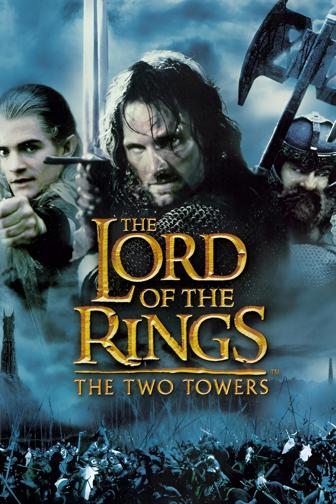

Acción
Aventura
Fantasía
Ciencia Ficción
Drama
El Señor de los Anillos: Las Dos Torres es la segunda entrega de la trilogía dirigida por Peter Jackson, basada en la obra de J. R. R. Tolkien. La historia continúa tras los acontecimientos de La Comunidad del Anillo, mostrando cómo los personajes siguen caminos separados pero conectados por un mismo objetivo: detener el avance del mal en la Tierra Media.